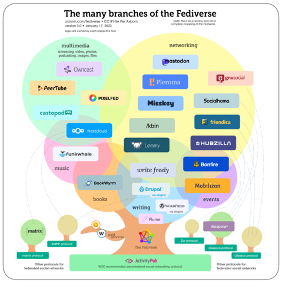

Fediverse 関連のブックマーク

ジャンルごちゃ混ぜで順番にも意味がありません。 私の関心領域にかかるコンテンツのリンクを片っ端から挙げていっています。 当然ではありますが，リンク先各コンテンツの著作権はそれぞれの著作（権）者に帰属します。
偏ってます（笑） 随時更新。 タレコミは大歓迎です！
Fediverse = Federation + Universe

{kind=link}
標準仕様または製品・サービス
- ActivityPub : W3C Recommendation 23 January 2018
- Mastodon - Decentralized social media
- What is PeerTube? | JoinPeerTube
- Pixelfed - Decentralized social media
- joinmisskey - Misskeyをはじめよう
- prismosuite · GitLab
- Keyoxide : Mastodon と連携可能な Identity サービス
- GitHub - NicolasConstant/BirdsiteLive: An ethical bridge from Twitter
- Write.as — A place for focused writing. : ActivityPub 対応のブログサービス。現在は有料版のみ
- BookWyrm: Social Reading and Reviewing
Mastodon サーバおよび主なアカウント
Go 関連
- TinyGo Humans : TinyGo developers and friends to communicate
- TinyGo (@TinyGo@mastodon.social) - Mastodon
- Rob Pike (@robpike@hachyderm.io) - Hachyderm.io
- mattn (@mattn) | Misskey.io : mattn さんは実はこっちが公式らしい？ でも最近は Nostr や Bluesky の人なのでこっちにはいないかも
- Hajime Hoshi (@hajimehoshi@mstdn.jp) - mstdn.jp : Ebitengine の中の人
- tenntenn (@tenntenn@mstdn.jp) - mstdn.jp : 「素性がわかる人のみフォロー許可」だそうです
- syumai (@_syumai@mstdn.jp) - mstdn.jp
- ikawaha (@ikawaha@mstdn.jp) - mstdn.jp : kagome の中の人
- zetamatta🍣升と丼.jp (@zetamatta@mstdn.jp) - mstdn.jp : NYAGOS の中の人
- GolangCI-Lint (@golangcilint@fosstodon.org) - Fosstodon
その他プログラミング言語関連
- Python Software Foundation (@ThePSF@fosstodon.org) - Fosstodon
- Ruby.social
- GitHub - przemekperon/mastodon-it-lists: List of Mastodon users that toot about programming and IT. : C#, .NET, Go, PHP, Python, Ruby, Rust, 他
- Rust Language Mastodon
科学（主に天文学）関連
製品・サービス・組織の公式アカウント（上記以外）
- mastodon.social
- w3c.social
- Free Software Foundation (@fsf@hostux.social) - Mastodon Hostux
- Thunderbird (@thunderbird@mastodon.online) - Mastodon
- Fosstodon
- FLOSS.social
- Signal (@signalapp@mastodon.world) - Mastodon
- Cloudflare (@cloudflare@noc.social) - Noc.Social
- Raspberry Pi :raspberrypi: (@Raspberry_Pi@raspberrypi.social) - Raspberry Pi
- mastodon.archive.org - Internet Archive
- En OSM Town | Mapstodon for OpenStreetMap : This is a fediverse/Mastodon server for people active in the OpenStreetMap Community.
- Inkscape (@inkscape@mastodon.art) - Mastodon.ART
- me.dm by Medium.com : Medium が提供するサーバ
- Tailscale (@tailscale@hachyderm.io) - Hachyderm.io
- Slashdot (@slashdot@mastodon.cloud) - mastodon.cloud
- Grafana Labs (@grafana@grafana.social) - Grafana Social
- BBC Mastodon : BBC の公式サーバ
- Flickr Foundation (@flickrfdn@glammr.us) - glammr.us Mastodon
各種ニュース
- mastodon.social
- Linux Magazine (@linuxmagazine@fosstodon.org) - Fosstodon
- カオスフィア より
- Astronomy Picture of the Day (@APoD@botsin.space) - botsin.space : 非公式
- NASA (@nasa@social.beachcom.org) - Social::Beach : 非公式
- HON.jp News Blog (@honjp@mastodon-japan.net) - Mastodon Japan Server
- Threadsのgihyo.jp (@gihyojp)
その他 気になるサーバや個人アカウント
- Don MacAskill (@d0n@sfba.social) - SFBA.social : Flickr CEO
- 山田奨治 Shoji YAMADA (@yamadashoji@mstdn.jp) - mstdn.jp : 『著作権は文化を発展させるのか: 人権と文化コモンズ』の著者
- 藤井太洋, Taiyo Fujii (@taiyo@ostatus.taiyolab.com) - taiyolab.com : SF 作家
- Haruhiko Okumura (@h_okumura@mstdn.jp) - mstdn.jp : 『LaTeX2ε美文書作成入門』の著者
- yomoyomo (@yomoyomo@mstdn.jp) - mstdn.jp : 『もうすぐ絶滅するという開かれたウェブについて 続・情報共有の未来』の著者
- 結城浩@日常 (@hyuki@social.hyuki.net) - 結城浩のマストドン : 『数学ガール』の著者
- Hidetomo Hosono (@h12o@mastodon.tokyo) - Mastodon.Tokyo : Mastodon.Tokyo 運営者
- のえる (@noellabo@fedibird.com) - Fedibird : fedibird.com 運営者
- Infosec Exchange : 情報セキュリティ関連のサーバらしい
- キュアスタ！ : 「プリキュアファンの為のインスタンスです」だそうです
- vim-jp | Misskey.io : vimmer は何処にでもいるw
- Linus Torvalds (@torvalds@social.kernel.org) : Linux の人（多分？）
- doctorow (@doctorow@mamot.fr) - La Quadrature du Net - Mastodon - Media Fédéré : SF 作家， Creative Commons でも活動
- 鷹野凌 (@ryou_takano@mstdn.jp) - mstdn.jp : HON.jp の中の人
- Masayuki Hatta (@mhatta@techpolicy.social) - techpolicy
- 新山祐介 (Yusuke Shinyama) (@mootastic@mstdn.social) - Mastodon 🐘
Web ページを Mastodon でシェアする
- donshare
- ShareToMastodon.js - ブラウザで見ているWebページをマストドンに投稿するブックマークレット · GitHub
- Mastodon Auto Poster - dlvr.it
電子フロンティア財団による解説記事
- Leaving Twitter’s Walled Garden | Electronic Frontier Foundation
- The Fediverse Could Be Awesome (If We Don’t Screw It Up) | Electronic Frontier Foundation
- Is Mastodon Private and Secure? Let’s Take a Look | Electronic Frontier Foundation
- How to Make a Mastodon Account and Join the Fediverse | Electronic Frontier Foundation
- User Generated Content and the Fediverse: A Legal Primer | Electronic Frontier Foundation
Cory Doctorow による Twitter 批判と代替手段としての Mastodon
- Pluralistic: Freedom of reach IS freedom of speech (10 Dec 2022) – Pluralistic: Daily links from Cory Doctorow
- Pluralistic: Better failure for social media (19 Dec 2022) – Pluralistic: Daily links from Cory Doctorow
- フェディバースが解決（する／しない）もの | p2ptk[.]org
- How To Make the Least-Worst Mastodon Threads | by Cory Doctorow | Apr, 2023 | Medium
雑多なリンク集
- Mastodon Icon | Font Awesome
- Go-Fed
- GitHub - mattn/go-mastodon: mastodon client for golang
- Golang ActitvityPub · GitHub
- Cage the Mastodon: An overview of features for dealing with abuse and harassment - Official Mastodon Blog
- はじめる Fediverse/Mastodon 2022 | gihyo.jp
- SNS「マストドン」に5年くらい居るコーヒー豆屋がユーザー目線でマストドンの初期おすすめムーブを書いてみる何か｜Nelson Coffee Roaster｜note
- 【マストドン・Misskeyなど】SNS連合『Fediverse』の遊び方 - DLチャンネル みんなで作る二次元情報サイト！
- Tumblr to add support for ActivityPub, the social protocol powering Mastodon and other apps • TechCrunch
- Flickr weighs support for ActivityPub, the social protocol powering Twitter alternative Mastodon • TechCrunch
- denise | A guide to potential liability pitfalls for people running a Mastodon instance
- 登録したFediverse鯖いろいろ - 十円均一
- マストドン（フェディバース）見つけた施設、団体、企業の（アクティブな）公式アカウント｜mgktaq｜note
- Mozilla to explore healthy social media alternative | The Mozilla Blog
- ツイッターの混乱で注目、分散型SNS「Mastodon」創設者が語るユーザー急増と運営理念のこれから | WIRED.jp
- 無料かつ広告も表示されない写真特化型SNS「Pixelfed」を使ってみたよレビュー - GIGAZINE
- 絵や文を作るオタク向けの個人的マストドンサーバーおすすめ｜XM2design/xanac｜note
- マストドンを5年間管理してきて｜辺境領主｜note
- GitHub - davecheney/pub: pub, a tiny ActivityPub to Mastodon bridge
- Mastodon — PaulStamatiou.com
- Medium embraces Mastodon. The fediverse is a breath of fresh air… | by Tony Stubblebine | Jan, 2023 | 3 Min Read
- GitHub - superseriousbusiness/gotosocial: Fast, fun, ActivityPub server, powered by Go.
- CreatodonというMastodonの創作系サーバーについて｜S.H.｜note
- Fediverse Observer
- Playing with ActivityPub - macwright.com
- マストドンセキュリティガイドライン - ashphy’s commit logs
- Welcome to Wildebeest: the Fediverse on Cloudflare
- MastodonはTwitterのコピーキャットではない、あるいはフェディバースはソーシャルウェブを再構築する | p2ptk[.]org
- 第1回 分散型SNS「Misskey」、それを支える技術スタック | gihyo.jp
- Adding ActivityPub to your static site
- 鯖缶工場 : Mastodon サーバ管理者向けの Discord チャネルらしい
- 続くといいな日記 – Mastodon 体験記
- Specialized Account Verification with Hachyderm | Hachyderm Community
- misskeyの急速な流行と分散型SNSの限界 | 右や左の旦那様
- Mozilla leads Mastodon app Mammoth’s pre-seed funding | TechCrunch : Mammoth は iOS 用のアプリらしい。残念
- Twitterをやめてマストドンに引っ越ししよう！！！！｜みそ｜note : 同人界隈の方らしい
- Meta is building a decentralized, text-based social network
- microblog.pub - A self-hosted, single-user, ActivityPub powered microblog.
- A new onboarding experience on Mastodon - Mastodon Blog
- Mozilla Social Private Beta Launch | The Mozilla Blog
- ブラウザ版はてなブックマークに、ブックマーク完了後の共有メニューを追加しました - はてなブックマーク開発ブログ : 「Mastodon へ共有」できるようになったらしい
- This is Instagram’s new Twitter competitor - The Verge : なんか ActivityPub で分散化に対応する（？）らしい
- Flipboard becomes first app to support Bluesky, Mastodon and Pixelfed all in one place | TechCrunch
- GoでMisskeyのCLIクライアントを作った話 (Misskey Advent Calender 2022) - 平和に生きたい
- Critical TootRoot bug lets attackers hijack Mastodon servers
- オランダ政府が公式Mastodonサーバー「overheid.nl」を立ち上げ - GIGAZINE
- The BBC on Mastodon: experimenting with distributed and decentralised social media - BBC R&D : BBC が Mastodon サーバを開設
- このブログがFediverseに対応しました : 普通のブログページを ActivityPub 対応にする
- 写真・動画共有のための連合型SNS、PixelfedのiOSアプリが正式リリース ——Android向けもGoogle Playですでにリリース済み | gihyo.jp